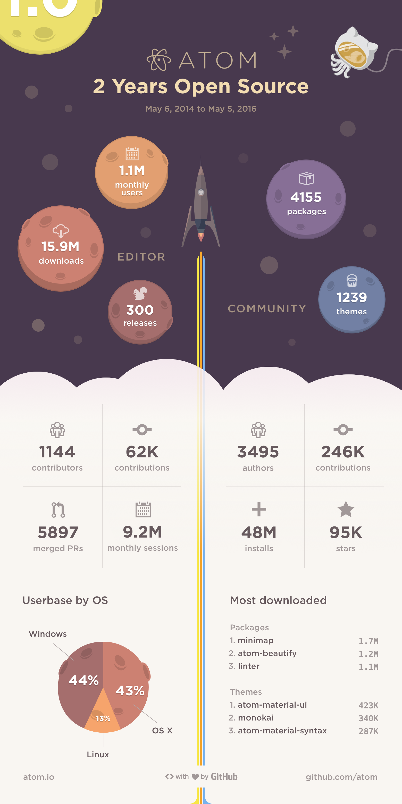

2 Years Open Source
Two years ago today, Atom was released as open source software. One year ago, we wanted to share with the community a vision of how far Atom had come in that time.
We are impressed and delighted with the progress that Atom has made in the past year. The number of users and contributors continues to grow. The editor and the ecosystem around it improves every day. So we wanted to share some milestones with you again this year:

We’re living in the future today thanks to your passion, commitment and belief in the ideas behind the Atom editor. We look forward to many more anniversaries with all of you.